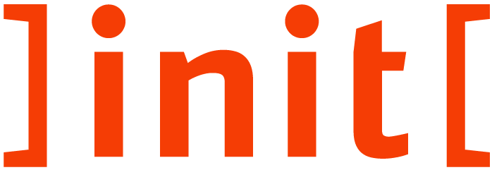

<!DOCTYPE html>
<html lang="de">
<head>
  <meta charset="UTF-8">
  <meta name="viewport" content="width=device-width, initial-scale=1.0">
  <title>Schätzquiz</title>
  <style>
    body { font-family: sans-serif; background: #f7f7f7; margin: 0; padding: 0; }
    .container { max-width: 400px; margin: 30px auto; background: #fff; border-radius: 10px; box-shadow: 0 2px 8px #0002; padding: 24px; text-align: center; }
    canvas { border-radius: 50%; background: #fff; touch-action: none; }
    .knob-value { font-size: 1.5em; margin: 12px 0; }
    .button { background: #F53D05; color: #fff; border: none; border-radius: 6px; padding: 12px 24px; font-size: 1em; cursor: pointer; margin-top: 12px; }
    .button:active { background: #E23703; }
    .feedback { margin: 24px 0; font-size: 1.1em; }
	.state-link { color: #C9C8D0; cursor: pointer; text-decoration: underline; }
	.state-link:hover { color: #9F9DAA; } /* optional: Hover-Farbe */
  </style>
</head>
<body>
  <div class="container" id="app"></div>
  <script>
    const questions = [
      { q: "Wie viele Verwaltungsgebiete gibt es in Deutschland?", a: 12522 },
      { q: "Wie viele Verwaltungsleistungen gibt es laut FIM-Portal?", a: 14728 },
      { q: "Wieviele Organisationseinheiten der Verwaltung sind im PVOG vorhanden?", a: 84083 },     
      { q: "Wie viele Datenpunkte zu Zuständigkeit gibt es im PVOG (~Gebiet * Leistung)?", a: 3825744 },
	  { q: "Für wie viele föderalen Verwaltungsleistungen ist im PVOG flächendeckend eine Zuständigkeit hinterlegt?", a: 23 }
    ];
	/*
		Quellen:
		- Verwaltungsgebiete: Auszug GV Destatis, https://www.destatis.de/DE/Themen/Laender-Regionen/Regionales/Gemeindeverzeichnis/Administrativ/Archiv/GVAuszugJ/31122024_Auszug_GV.html
			alle ARS ohne Textkennzeichen "50" und "41" wegen dubletten. Stand: 31.12.2024
		- Verwaltungsleistungen: https://fimportal.de/search?resource=leistung-steckbriefe&page=1&page_size=20 Stand: 29.09.2025
		- Verwaltungsorganisationen: https://docs.fitko.de/resources/pvog/ Bezug über Bereitstelldienst API, Stand: 29.09.2025
		- Zuständigkeit: https://docs.fitko.de/resources/pvog/ Bezug über Bereitstelldienst API, Stand: 29.09.2025
		- https://docs.fitko.de/resources/pvog/ Bezug über Bereitstelldienst API, eigene Auswertung. Stand: 07.2025
		
			
	*/

    let current = 0;
    let guesses = [];
    let feedbackLevels = [];
    let state = "question";
    let knobValue = 1; // Defaultwert ist 1
	let previousState = null; // merken, woher man kommt --> ggf. optional

    // Hilfsfunktion: Winkel (0 = unten) → Wert (logarithmisch)
    function logValueFromAngle(angle) {
      // 0 = unten (6 Uhr), 2π = wieder unten
      const min = 1, max = 10000000;
      const logMin = Math.log10(min), logMax = Math.log10(max);
      // Normiere Winkel auf 0...1 (0 = unten, 1 = wieder unten)
      let percent = (angle - Math.PI/2) % (2*Math.PI) / (2*Math.PI);
      if (percent < 0) percent += 1;
      const logVal = logMin + percent * (logMax - logMin);
      return Math.round(Math.pow(10, logVal));
    }


    // Hilfsfunktion: Wert → Winkel (0 = unten)
    function angleFromLogValue(val) {
      const min = 1, max = 10000000;
      const logMin = Math.log10(min), logMax = Math.log10(max);
      const percent = (Math.log10(val) - logMin) / (logMax - logMin);
      return (percent * 2 * Math.PI) + Math.PI/2;
    }


	// originaler knob
	function drawKnob(canvas, angle) {
	  const ctx = canvas.getContext("2d");
	  const r = canvas.width / 2;
	  ctx.clearRect(0, 0, canvas.width, canvas.height);

	const min = 1, max = 10000000;
	const logMin = Math.log10(min), logMax = Math.log10(max);
	const totalTicks = (logMax - logMin) * 5; // 5 Striche pro Dekade

	for (let i = 0; i <= totalTicks; i++) {
	  const percent = i / totalTicks;
	  const tickAngle = percent * 2 * Math.PI + Math.PI / 2; // Start bei 6 Uhr
	  const isMajor = (i % 5 === 0);
	  const tickLen = isMajor ? 14 : 7;
	  const tickColor = isMajor ? "#888" : "#bbb";

	  // Strich zeichnen
	  ctx.beginPath();
	  ctx.strokeStyle = tickColor;
	  ctx.lineWidth = isMajor ? 2 : 1;
	  ctx.moveTo(
		r + (r - 14) * Math.cos(tickAngle),
		r + (r - 14) * Math.sin(tickAngle)
	  );
	  ctx.lineTo(
		r + (r - 14 - tickLen) * Math.cos(tickAngle),
		r + (r - 14 - tickLen) * Math.sin(tickAngle)
	  );
	  ctx.stroke();

	  // Zahl hinzufügen bei Major-Tick
	  if (isMajor && i !== totalTicks) {
		const decade = i / 5 ; // +1 weil i=0 → 10^1 ; + 1
		
		const label = `${Math.pow(10, decade).toLocaleString()}`;
	//const label = `10^${decade}`;
		const textRadius = r - 40; // Abstand vom Mittelpunkt

		const textX = r + textRadius * Math.cos(tickAngle);
		const textY = r + textRadius * Math.sin(tickAngle);

		ctx.fillStyle = "#333";
		ctx.font = "12px sans-serif";
		ctx.textAlign = "center";
		ctx.textBaseline = "middle";
		ctx.fillText(label, textX, textY);
	  }
	}


	  // Kreis
	  ctx.beginPath();
	  ctx.arc(r, r, r - 10, 0, 2 * Math.PI);
	  ctx.strokeStyle = "#ccc";
	  ctx.lineWidth = 1;
	  ctx.stroke();

	  // Zeiger
	  ctx.beginPath();
	  ctx.moveTo(r, r);
	  ctx.lineTo(r + (r - 20) * Math.cos(angle), r + (r - 20) * Math.sin(angle));
	  ctx.strokeStyle = "#F53D05";
	  ctx.lineWidth = 2;
	  ctx.stroke();
	  
	  


	}


    function render() {
      const app = document.getElementById("app");
      app.innerHTML = "";

      if (state === "question") {
        const q = questions[current];
        knobValue = 1; // Defaultwert ist 1
        let angle = angleFromLogValue(knobValue);

        app.innerHTML = `


		  <div style="display: flex; justify-content: space-between; align-items: center; margin-bottom: 16px;">
			<div style="flex: 1; text-align: left; font-size: 1em; font-family: inherit;">
			  <b>Schätzquiz <br> Verwaltungsdaten</b>
			</div>
			
		  </div>
		<hr style="border: none; border-top: 1px solid #ccc; margin: 16px 0;">
		
		
          <div><b>Frage ${current + 1} von ${questions.length}</b><br>${q.q}</div>
          
			<div style="display:flex; flex-direction:column; align-items:center;">
			  <div class="knob-value" id="knob-value">${knobValue.toLocaleString('de-DE')}</div>
			  <canvas id="knob" width="200" height="200"></canvas>
			</div>

          <button class="button" id="submit">Antwort abschicken</button>
		  
		  
		  <hr style="border: none; border-top: 1px solid #ccc; margin: 16px 0;">
		  <div><a class="state-link" id="impressum">Impressum</a></div>


        `;

        const canvas = document.getElementById("knob");
        drawKnob(canvas, angle);

        let dragging = false;

        function updateKnob(e) {
          const rect = canvas.getBoundingClientRect();
          const x = e.clientX - rect.left - canvas.width / 2;
          const y = e.clientY - rect.top - canvas.height / 2;
          let ang = Math.atan2(y, x);
          // Normiere auf 0...2π, 0 = rechts, -π/2 = unten
          if (ang < -Math.PI/2) ang += 2 * Math.PI;
          angle = ang;
          knobValue = logValueFromAngle(angle);
          drawKnob(canvas, angle);
          document.getElementById("knob-value").textContent = knobValue.toLocaleString('de-DE');
        }

        canvas.addEventListener("pointerdown", e => { dragging = true; updateKnob(e); });
        canvas.addEventListener("pointerup", e => dragging = false);
        canvas.addEventListener("pointerleave", e => dragging = false);
        canvas.addEventListener("pointermove", e => { if (dragging) updateKnob(e); });

        document.getElementById("submit").onclick = () => {
          guesses[current] = knobValue;
          const correct = q.a;
          const rel = Math.abs(knobValue - correct) / correct;
          let level = 0;
          if (rel < 0.05) level = 3;
          else if (rel < 0.2) level = 2;
          else if (rel < 0.5) level = 1;
          feedbackLevels[current] = level;
          state = "feedback";
          render();
        };
		
		document.getElementById("impressum").onclick = () => {
		  previousState = state;
		  state = "impressum";
		  render();
		};

      } else if (state === "feedback") {
        const q = questions[current];
        const guess = guesses[current];
        const correct = q.a;
        const level = feedbackLevels[current];
        const texts = ["Weit entfernt! 😬", "Nicht schlecht!", "Gut geschätzt!", "Hervorragend! 🎯"];
        app.innerHTML = `
          <div class="feedback">${texts[level]}<br>
          Deine Schätzung: <b>${guess.toLocaleString('de-DE')}</b><br>
          Richtige Antwort: <b>${correct.toLocaleString('de-DE')}</b></div>
          <button class="button" id="next">OK</button>
        `;
        document.getElementById("next").onclick = () => {
          if (current < questions.length - 1) {
            current++;
            state = "question";
          } else {
            state = "result";
          }
          render();
        };

      } else if (state === "result") {
        const avgLevel = feedbackLevels.reduce((a, b) => a + b, 0) / feedbackLevels.length;
        let summary = "";
        if (avgLevel >= 2.5) summary = "🎉 Großartig geschätzt!";
        else if (avgLevel >= 1.5) summary = "👍 Solide Leistung!";
        else if (avgLevel >= 0.8) summary = "😐 Da ist noch Luft nach oben.";
        else summary = "😅 Das war wohl eher geraten.";

        app.innerHTML = `
          <div class="feedback">
		  <b>Dein Gesamtergebnis:</b>
		  <br>${summary}
		  <br>
		  <br>Viele Daten zur föderalen Verwaltung gibt es auf dem <a href="https://dashboard.digitale-verwaltung.de/">Dashboard Digitale Verwaltung</a>
		  <br>
		  <br>Informationen zu maßgeschneiderten Datenprojekten gibt es bei <a href="https://www.init.de/thema/data-driven-government">init</a>
		  </div>
          <button class="button" onclick="location.reload()">Nochmal spielen</button>
        `;
      } else if (state === "impressum") {
	  app.innerHTML = `
	    <div style="margin: 20px; font-family: sans-serif; font-size: 1em; line-height: 1.5;">
	      <h2>Impressum</h2>
						  <p>
				Herausgeber<br>
				]init[ Aktiengesellschaft für digitale Kommunikation<br>
				Köpenicker Straße 9<br>
				10997 Berlin<br>
				<br>
				Fon: +49 30 97006 0<br>
				Fax: +49 30 97006 135<br>
				E-Mail: init@init.de<br>
				<br>
				Medienanfragen: presse@init.de<br>
				<br>
				Vorstand<br>
				Harald Felling (Vorsitzender)<br>
				Julia Läkemäker<br>
				Sandra Valentin<br>
				Dr. Gregor Költzsch<br>
				Dr. Axel Kaufmann<br>
				Dr. Eckart Pech<br>
				<br>
				Amtsgericht Charlottenburg, Handelsregisternummer: HRB 73218<br>
				Umsatzsteuer-Identifikationsnummer: DE 812816783<br>
					<br>
	        Weitere rechtliche Hinweise und Datenschutzinformationen finden Sie auf unserer Website.
	      </p>
	      <button class="button" id="back">Zurück</button>
	    </div>
	  `;
	
	  document.getElementById("back").onclick = () => {
	    state = previousState || "question";
	    render();
	  };
	}

    }

    render();
  </script>
</body>
</html>